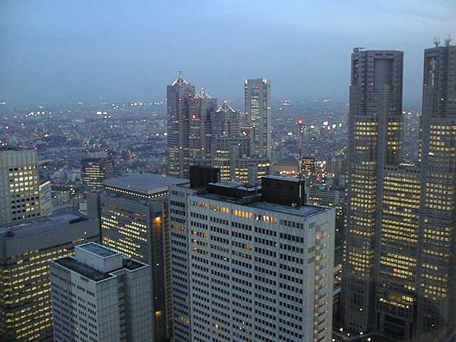
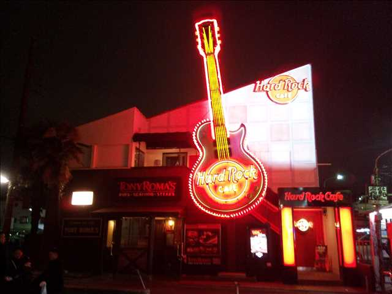
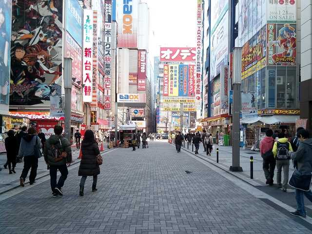
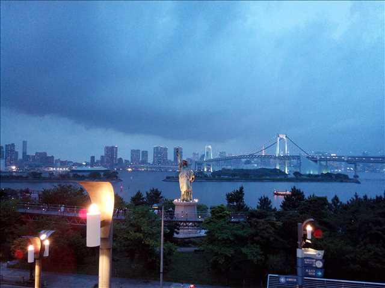

Most of attractions in Tokyo are found in or around JR Yamanote Line, Asakusa and Odaiba.
Asakusa
Located between central Tokyo and Narita Airport, Asakusa is an old-fashioned town around a very popular temple 'Sensoji'. The front approach from 'Kaminarimon' Gate leading to the temple is lined with tiny shops, some of which have been established centuries back in Edo era, with wide variety of souvenir shops selling traditional Japanese items including Yukata (short kimono), wooden chopsticks and paper handicrafts. The first few days of January will be very crowded with visitors who make a wish at the beginning of a New Year. On January 15th you can see girls who have just turned 20 years old in traditional Kimono.
Access
Asakusa Station - Asakusa Line (Toei Metro), Ginza Line (Tokyo Metro)
Shinjuku

Shinjuku station boasts the highest number of passengers in the world - 3 million per day.
Shinjuku is a huge town divided in several areas:
Western Shinjuku - Skyscrapers with cafes and bars on the highest floors.
Eastern Shinjuku - roughly consists of 'Kabukicho' area with night life and other ordinary but quite active business/shopping areas. Kabukicho is not a town for family or children.
Access
Yamanote Line (JR)
Saikyo Line (JR)
Shonan-Shinjuku Line (JR)
Chuo Line, rapid train(JR)
Sobu-Chuo Line, local train(JR)
Shinjuku Line (Toei Metro)
Marunouchi Line (Tokyo Metro)
Rinkai Line (Rinkai Railway)
Keio Line (Keio Railway)
Odakyu Line (Odakyu Railway)
Shibuya
Together with Harajuku, Shibuya is a leading fashion town which attracts young crowd, while being one of the business centers of Tokyo. This is a quite busy town with hilly roads.
Access
Yamanote Line (JR)
Saikyo Line (JR)
Shonan-Shinjuku Line (JR)
Rinkai Line (Rinkai Railway)
Ginza Line (Metro)
Inogashira Line (Keio Railway)
Harajuku
Harajuku is definitely the fashion capita for the young Japanese girls. Unique fashion is accepted here probably more than anywhere else in Japan.
Access
Yamanote Line (JR)
Roppongi

Roppongi offers the best night life in Japan with plenty of bars and clubs attracting international crowd. This town looks totally different between the day and the night. Generally in Japan, people are keen to catch the last train to get home regardless of the day of week, but here in Roppongi the opposite thing is happening - people come here by the last train on weekends. Bars and pubs with English speaking crowd are easy to find here.
Access
Hibiya Line (Tokyo Metro)
Oedo Line (Toei Metro)
Ueno
Ueno Station is a hub for long-distance lines especially towards the Northeast. Before the Northern Shinkansen (bullet train) reached Tokyo, most people from Northeastern Japan arrived at this station on their first visit to Tokyo, which may be the cause of the nostalgic mood still remaining in some parts of this town. Ame-Yoko is a bustling and seamless shopping street between Ueno and Okachimachi stations. Enjoy strolling around Shinobazu Pond in Ueno Park, getting away from the crowd.
Easy access to/from Akihabara.
Access
Yamanote Line (JR)
Keihin-Tohoku Line (JR)
Takasaki Line (JR)
Ginza Line (Tokyo Metro)
Keisei Line (Keisei) - goes to Narita airport.
Akihabara

Akihabara was originally known for its massive electronic parts shops. As the IT industry grew, a lot of computer shops have also appeared here first, attracting many computer engineers. Today it has also become famous for the 'Otaku' (nerd) culture in general.
Access
Yamanote Line (JR)
Keihin-Tohoku Line (JR)
Sobu-Chuo Line local train(JR)
Tsukuba Express Line (MIR)
Around Tokyo Station
The area aorund Tokyo Station is a pure business town with head offices of top enterprises.
As you get out of Tokyo Station, you can glimplse the Imperial Palace.
Access
Yamanote Line (JR)
Keihin-Tohoku Line (JR)
Sobu-Kaisoku Line rapid train(JR)
Keiyo Line(JR)
Tokaido Line(JR)
Sobu-Yokosuka Line(JR) - goes to Narita airport
Shinkansen Line bullet trains (JR East, JR Tokai)
Marunouchi Line (Tokyo Metro)
Odaiba

A scenic island on the bay, right next to the city center. Definitely one of the very best spots for tourists. There is a boat from Asakusa to Odaiba which goes down the Sumida River and continues through the bay. Enjoy the simply amazing view in the dayo and at night. Yurikamome is a special train without a driver for the purpose of connecting Shimbashi statin and areas of Odaiba. Rinkai Line is also a very short segment that connects the mainland and Odaiba under the sea, which can be useful for saving time when traveling to Odaiba from Shinjuku or Shibuya station, because it runs seamlessly with JR Saikyo Line.
Access
Rinkai Line (Rinkai)
Yurikamome Line (Yurikamome)
You can also take boats to Odaiba from Asakusa or Hamamatsucho
If you are still wondering if you should visit Odaiba or not, just google some excellent photos of Odaiba.
Yokohama
Yokohama is less than half an hour away by train from Tokyo, and boasts the beautiful bay area comparable to Odaiba, and has a much more relaxed atmosphere than Tokyo. If you are quite busy you can make a day trip, but otherwise you can stay in Yokohama for a few nights. Some hotel near JR Sakuragicho or Kannai station would have an advantage in location. I'll write a separate page for Yokohama when I have time...
Access(This is not a complete list of transport, but just a few hints.)
From Narita Airport, JR Sobu Line runs directly to Yokohama Station. Many of Narita Express trains also stop at Yokohama Station.
From Haneda Airport, Keiky Line runs directly to Yokohama Station.
Transfer at Yokohama Station to a local Keihin-Tohoku Line to get to Sakuragicho or Kannai station.
Yokohama - Sakuragicho takes 3 minutes.
Yokohama - Kannai takes 5 minutes.
Get a free map in English at the Tourist Information of Sakuragicho Station.